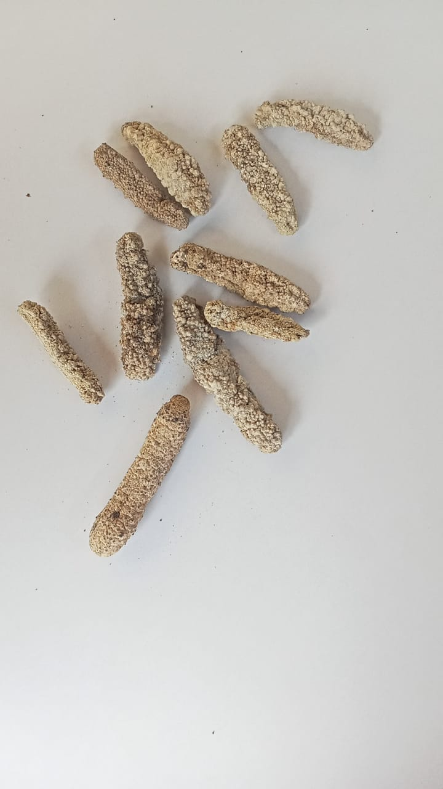
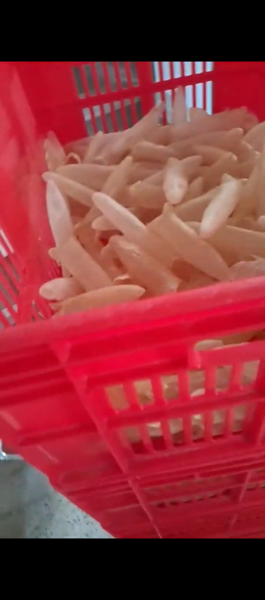

Our fish maw is harvested from the pristine waters of the Kenyan coast. Each piece is sun‑dried naturally, preserving its rich collagen content and delicate texture. We offer various grades to meet the needs of international buyers – from restaurant suppliers to health food distributors. Every batch is hand‑sorted to ensure uniformity and purity.

Our sea cucumbers are wild‑caught by local fishing communities using traditional methods that protect marine ecosystems. We offer both fresh‑frozen and fully dried products, processed to retain maximum nutritional value. With increasing global demand for high‑quality sea cucumber, we provide consistent supply and traceability from ocean to export.

Kenya’s coastline offers ideal conditions for high‑quality sea cucumber and fish maw. We work directly with local cooperatives to promote sustainable harvesting, fair wages, and marine conservation. Our processing facilities follow strict hygiene standards, and we handle all export documentation for hassle‑free international shipping. By choosing us, you support both exceptional products and responsible fishing.